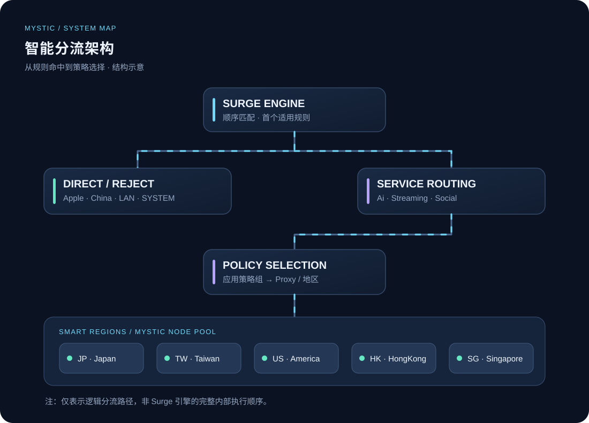
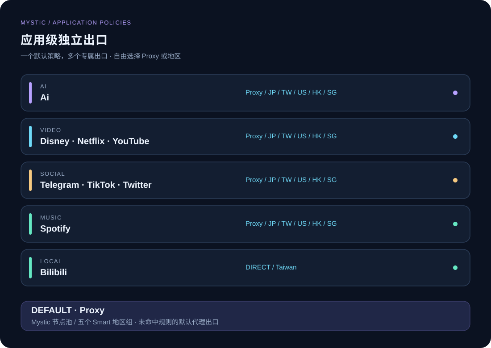
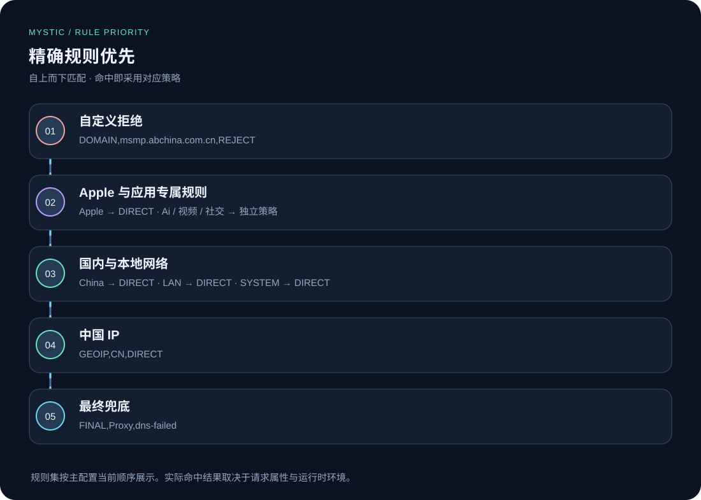
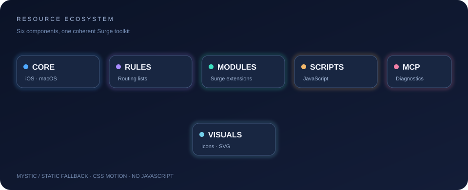
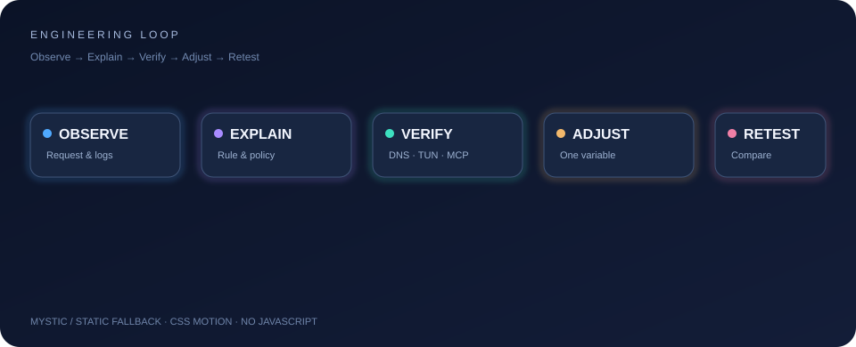

Artificial Intelligence
AI · ChatGPT · Grok 等服务，按规则匹配并交由 Ai 策略组。
Proxy / 五地区SURGE · IOS / MACOS · NETWORK INTELLIGENCE
Intelligent by Design.
Precise by Nature.
让每一条连接，都有清晰的方向。
应用独立出口、智能地区选路、加密 DNS 与可审计的网络策略。
点击「进入沉浸体验」可播放背景歌曲；滚动期间持续播放，支持随时暂停。
01 / THE SYSTEM
从请求命中到最终出口，每一步都应有迹可循。

策略示意图，不代表 Surge 引擎的全部内部执行顺序。
02 / SERVICE POLICIES
为 AI、影音与社交业务配置各自的网络出口。
AI · ChatGPT · Grok 等服务，按规则匹配并交由 Ai 策略组。
Proxy / 五地区Netflix、Disney、YouTube 使用各自独立策略组。
Proxy / 五地区Telegram、TikTok、Twitter 按专属规则选路。
Proxy / 五地区Apple 与 China 规则直连；Bilibili 支持 DIRECT / Taiwan。
DIRECT / Taiwan
03 / RULE PRIORITY
规则先后顺序会影响最终策略，避免无意覆盖。

04 / OPEN ECOSYSTEM
主配置、规则、模块、脚本、诊断参考与视觉资源协同维护。

05 / ENGINEERING PHILOSOPHY
Observe → Explain → Verify → Adjust → Retest

当前配置包含自定义资源映射与订阅占位符，不能直接保证在其他设备可用。MCP 的启用不等于开放远程访问；HTTP API 凭据、证书与节点订阅不应公开。
READY TO EXPLORE?